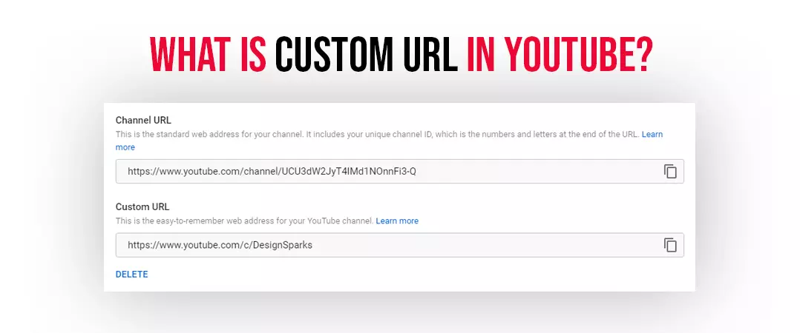
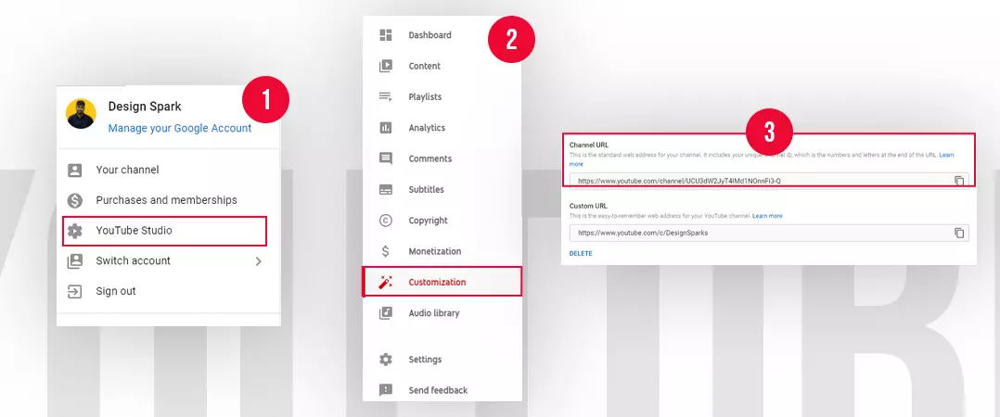
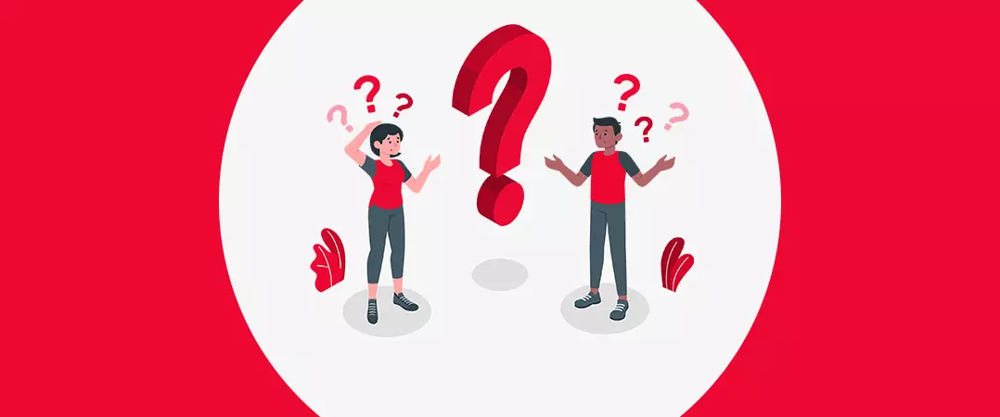
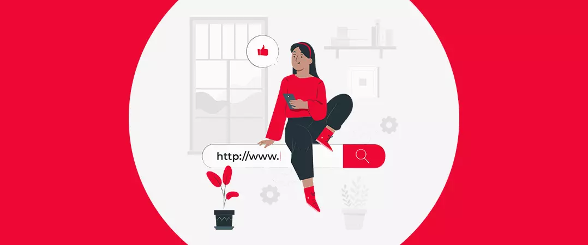
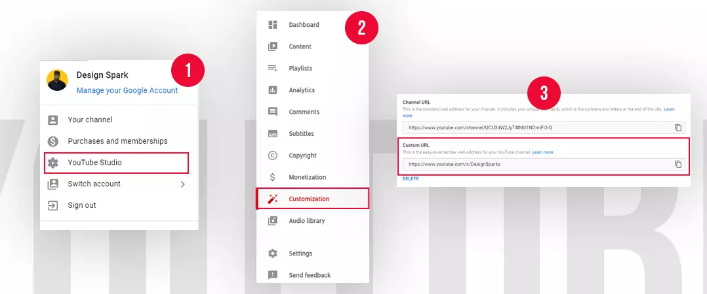
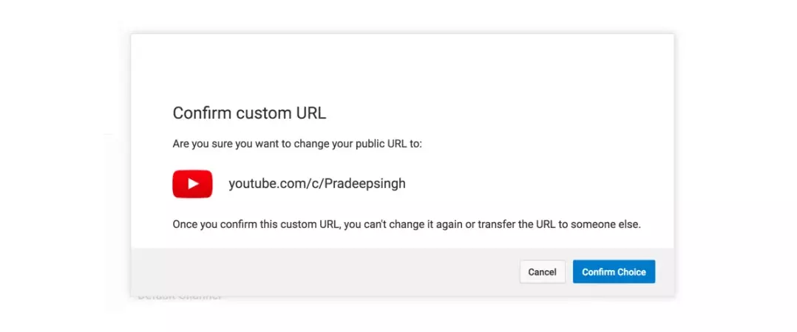

YouTube permits you to create a custom URL for your channel when you fulfill some required eligibility criteria. If you have had your channel for a while, then chances are you are already eligible for the same but aren't aware of it yet.
You are not stuck with the shabby-looking channel URL string for life – YouTubers always could change them. However, YT did not want to make URL changes a regular occurrence. Therefore, YT only permitted creators to alter their YouTube custom URL 3 times a year.
You have to be extra careful before you utilize all your tries unless, of course, you want to end up with a URL string that is misleading or unidentifiable.
We have designed this article to walk you through the different steps needed to set your first YouTube custom URL and remove or change an existing URL.
Let us first start by understanding what a custom URL is and how it differs from an ID-based URL – followed by the eligibility requirements you have to look out for. Stay tuned.
What Is Custom URL in YouTube

Did you know that a single URL does not bind your channel? – In fact, YT allows you to create more URLs that look different but redirect your viewers to the same channel homepage.
Your custom URL is a more personal-looking URL of your channel that you can share with your community.
A typical Custom URL will look like this - youtube.com/creatorsname or youtube.com/c/creatorsname.
Of course, you can model your custom URL on the following YouTube suggestions:
- Linked Website name
- YouTube username
- Display name
- Existing vanity URLs
These options are YouTube's way of making sure that your channel maintains its existing identity - it should not become unrecognizable due to your new URL
How to Find URL of YouTube Channel

- Sign in/up to youtube.com
- Click on your channel icon in the top right corner.
- Select 'YouTube studio'.
- Navigate to 'Customization' from the left-hand column of your screen.
- On the 'Channel customization' page, select 'Basic Info' from the navigation bar.
- You can view or copy your existing channel URL from the 'Channel URL' section.
An example of an ID-based URL: youtube.com/channel/UCHFDHA7zhfghdkW6Hghk3Qq
As you can see, an ID-based URL has the end made up of several numbers and alphabets – can you imagine anyone retaining that in their memory? I think not.
In comparison, your custom URL will look much more professional and easier to remember.
Also read: YouTube Analytics
Why Do You Need a YouTube Custom URL?

Below are some essential points that will compel you to put in additional effort to set your custom YouTube URL.
- Branding: You can generate awareness and recognition for your channel on multiple platforms.
- Custom URL quickly gets registered in the mind of your viewers - something an ID-based URL could never do.
- Custom URLs can easily be shared with email, embedded on websites or imprinted on business cards.
- Your channel will enjoy more subscribers and higher engagement. Of course, you also have the option to buy YouTube subscribers as part of your YouTube marketing strategy.
Eligibility for YouTube Custom URL

For permission to create a custom URL, you must clear your YT channel on the following requirements.
- Channel must have 100 subscribers or more.
- At Least 30 days have passed since the channel creation.
- Channel icon is uploaded.
- A banner image is present on the channel.
YouTube set the above requirements to prevent newly created channels from publishing custom URLs.
We recommend new channels wait for at least 30 days and gather a minimum of 100 subscribers - before considering the next steps listed in this article.
Note: YouTube states that it holds the right to remove, change or reclaim your custom URL at any point in time. For instance, if someone previously linked your URL to a now-deleted Google account.
How to Get Custom URL for YouTube Channel

When you meet all the requirements needed for a custom URL – you will receive two indications:
- An email notification.
- A notice in the basic info setting.
You can also receive a message on your channel dashboard.
Let us understand the step-by-step process of creating a custom URL:
- Navigate to your 'YouTube studio'.
- Click 'Customization' on the left-hand column of your screen.
- Select 'Basic info' from the navigation tab.
- Press the 'Set a custom URL for your channel' option below your channel URL section.
- In the box that follows, you will see your customized URL - these are recommendations from YouTube derived from your channel details.
- You can apply additional characters (numerals and letters) to supplement the uniqueness of your custom URL.
- For the final step, press 'Publish,' followed by CONFIRM.
Your new URL is now published.
Also read: YouTube Livestreaming
How to Change Custom URL of YouTube Channel

YouTube has set a limit to how many times you can change your custom URL – which is 3.
Want to know How to change YouTube channel URL? Let's take it one step at a time.
- Go to your 'YouTube studio' dashboard.
- Select 'Customization' from the left-hand menu.
- Now, click 'Basic info' from the navigation menu.
- To delete the URL, press the 'DELETE' option beneath your existing custom URL.
- Tap on the custom URL below 'About.'
- Press 'Remove,' and click 'Remove' again for confirmation of deletion for your URL.
Remember: Upon deleting your existing custom URL, you may not be able to set a new one immediately. You will have to wait for a few days before your previous custom URL gets permanently deactivated. Once removed, you can set a unique URL by following the above steps.
To sum up, YT custom URLs will benefit your channel in more ways than one. Hence, we urge you not to leave it on the back burner.
We hope that you found our article on how to get a custom URL on YouTube valuable. Do check out more such content on our website.
Have you set your first custom URL yet?
Feel free to share.